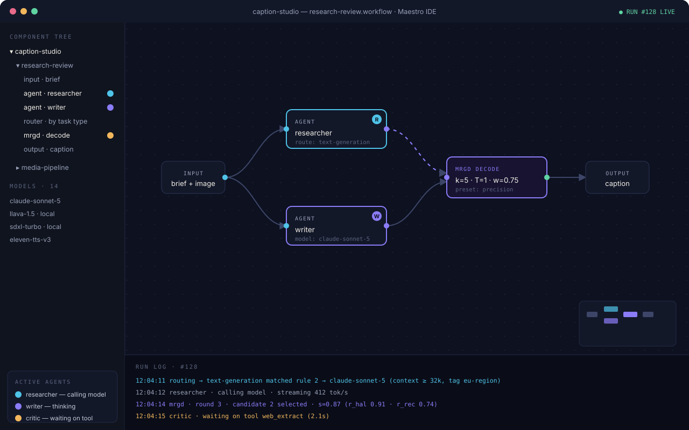

Start here · about 25 minutes
Build your first real workflow
A research → draft → review pipeline: two agents working in sequence, a critic checking their output, you approving the final result — and a budget making sure nothing runs away.

1. Lay out the graph
- Create a workflow named
research-reviewand drag on: Input, two Agent nodes, one Human Approval node, and an Output. - Wire them: Input → agent "researcher" → agent "writer" → Human Approval → Output.
- Notice the Problems panel: it flags the unconfigured agents. Maestro validates before running — you can't launch a broken graph by accident.
2. Configure the researcher
- Select the first Agent node. In the inspector, set its role prompt: "You are a meticulous researcher. Gather relevant facts for the given brief and return them as a bulleted list with one-line sources."
- Set binding to Route by task type: text-generation — the matrix picks the model.
- Set max iterations to 4 and leave autonomy on Auto.
3. Configure the writer
- Role prompt: "You are a clear, plain-spoken writer. Turn the research notes into a 300-word draft. No exclamation marks."
- Bind it to a fixed model if you have a favorite for prose — fixed bindings and routed bindings mix freely in one workflow.
4. Add the approval gate and a budget
- Select the Human Approval node. When the run reaches it, Maestro pauses that branch and shows you the draft with Approve / Reject / Edit. Your edit — not the agent's — is what flows onward if you change anything.
- Select the canvas background to open workflow settings, and set a run budget: $0.50. If the run ever hits it, execution pauses at a safe point and asks you — it never overruns silently.
5. Run it and read the live map
- Press Run ▶ and give it a brief ("three surprising facts about sea otters, with sources").
- Watch the researcher's badge appear on its node — cyan while it calls the model, violet while it thinks. The component tree mirrors the same state.
- When the approval request appears, read the draft, tweak a sentence with Edit, and approve.
- Open Runs → this run. The Gantt timeline shows both agents' spans, your approval pause, and per-node token costs. Click any bar for exact inputs and outputs.
Make it parallel. Add a second researcher and a Join node: independent branches run concurrently up to your concurrency limit, and the live map shows both badges working at once.
Reusable pieces. Select the two research nodes, group them into a frame, and convert the frame into a sub-workflow — it becomes a single node you can drop into any other workflow.
Where to go next
- Add an MRGD Decode node after the writer to raise draft quality measurably.
- Refine the matrix so research routes to a cheap model and prose to a premium one.